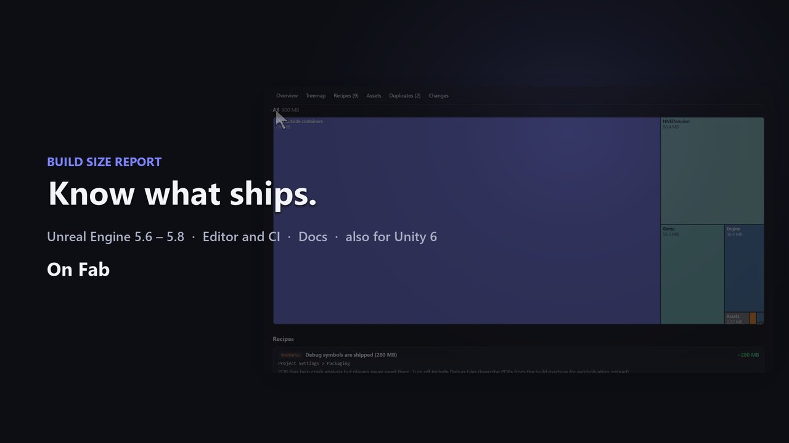

Build Size Report
See the real bytes on disk of every package in your packaged build, what each fix saves, and how big the next Steam patch will be. Read-only, with an HTML report and a CI budget check.

Quick start (Unreal Engine)
Build Size Report shows what really takes space in your packaged game, why each asset is in the build, and how much you save by fixing it. It reads the finished build, so the numbers are the bytes players download, not editor estimates. It never deletes anything.
Requirements: Unreal Engine 5.6, 5.7 or 5.8, Windows. The plugin is editor-only: nothing of it ends up in your game.
1. Install
- Copy
BuildSizeReportinto<YourProject>/Plugins/, or enable it from the Fab library. - Restart the editor. The window is under Tools > Build Size Report.
2. Package the game
Use Platforms > Windows > Package Project or your BuildCookRun script as usual. Any configuration works; Shipping gives the real numbers.
3. Analyze
- Open Tools > Build Size Report.
- Build: pick the build folder. Any of these works:
- the folder with the game
.exe; - the archive folder that contains it (for exampleBuilds/1.2withWindows/inside).
Recent builds and Saved/StagedBuilds are found automatically. Otherwise use Browse....
3. Press Analyze. A snapshot of the build is saved automatically (Saved/BuildSizeReport/Snapshots).
You get: - Overview: size by category, budget status, biggest wins. - Assets: every package and file with its size on disk. Sort, filter, and double click to find it in the Content Browser. - Treemap: click folders to open them, right click to go up. - Recipes: what to change and how much it saves. Apply changes the setting with Undo; the asset is marked dirty, not saved. - Duplicates: byte-identical textures, sounds and files stored more than once. - Details (right panel): select an asset to see Why is it in the build?, the chain of references from a map or startup setting to the asset.
4. Compare builds and estimate the patch
After the next build: 1. In Compare with, choose the earlier snapshot. 2. Press Analyze again.
The Changes tab lists what grew, shrank, appeared and disappeared.
The Patch download card estimates how much a player downloads to update, for block-based patchers such as SteamPipe. It is a range: - Low end: new and changed data only. - High end: also data that did not change but moved inside a container. Adding one texture early in a container shifts everything after it. The gap between the two numbers is how much your patch depends on the patcher finding moved data again.
5. Share
- HTML report: a single file with every table and the treemap. It works offline in any browser. Links to a section open there, for example
report.html#recipes. - CSV: every package with its sizes.
6. Budgets and CI
Set limits in Project Settings > Plugins > Build Size Report: total size, growth, patch size and folder budgets. They are stored in DefaultEditor.ini for the whole team. On the build machine (no GPU needed):
UnrealEditor-Cmd.exe MyGame.uproject -run=BuildSizeReport -Build="D:/Builds/1.2" -Baseline=latest -Label=%BUILD_NUMBER% -nullrhi -unattended
- Exit code:
0within budget,1over budget,2on error. - Output: an HTML report, a snapshot, and a Markdown summary to paste into the pull request.
- Options:
-Out=<folder>,-Markdown=<file>;-BudgetMB=,-MaxGrowthMB=,-MaxGrowthPercent=;-MaxPatchMB=: compared with the low end of the patch estimate (new and changed data), so moved data never fails the build;-NoAssets: skip asset inspection, faster;-NoSnapshot.
Blueprint and Python: UBuildSizeReportFunctions.AnalyzeBuild(BuildFolder, BaselineSnapshot, Label).
Reading the numbers
- Sizes are bytes on disk after compression, in binary units (1 MB = 1024 KB). The total equals the size of the build folder.
- Files outside containers: the executable, its DLLs, debug symbols (
.pdb) and other loose files. In Development builds with debug files included, this is often the largest block. - Engine data: what the engine needs in every game, such as the asset registry, config, internationalization and global shaders.
<container> (index and padding): the table of contents and alignment of an IoStore or pak container.<container> (shader code)/(script objects)/(container header): data without a package name, attributed to its container.- Plugin content (for example a plugin that is enabled by default but unused): turn the plugin off in Edit > Plugins if your game does not need it.
Troubleshooting
| Symptom | Fix |
|---|---|
| "Build folder not found" or nothing is listed | Pick the folder with the .exe, or its archive folder. Building into Saved/StagedBuilds also works. |
| Many files show as unattributed | The containers are encrypted. Analyze an unencrypted test build for full detail. |
| A recipe points at engine content | It does not: engine and engine-plugin assets are excluded from recipes because they can not be changed in a project. |
| The patch range is wide | Data moved inside the container. Keeping the cook order stable, or putting rarely changing content in its own chunk, narrows it. |
Quick start (Unity)
Build Size Report shows what really takes space in your player build, how much each fix saves, and how big the next patch will be. It reads the finished build, so the numbers are the bytes players download. It never deletes anything.
Requirements: Unity 6 (6000.6), any render pipeline. The package is editor-only: nothing of it ends up in your game.
1. Install
Package Manager > + > Add package from disk, then pick com.alicemedia.buildsizereport/package.json. The window is under Window > Analysis > Build Size Report.
2. Build and analyze
- Build your player as usual (File > Build Profiles > Build).
- Open Window > Analysis > Build Size Report. The last build folder is filled in.
- Press Analyze.
A snapshot of every successful build is also kept automatically (BuildSizeReport/Snapshots in the project folder), so the next build can be compared.
You get: - Overview: size on disk, possible savings, size by category, budget status. - Assets: every asset and file with its size on disk. Click an asset to select it in the Project window. - Recipes: what to change and how much it saves. - Apply changes the import or project setting; Revert puts the previous value back. - Recipes: texture size and compression, mipmaps on sprites and UI, PCM and ADPCM sounds, development builds, managed stripping, debug symbols, do-not-ship folders, Resources and StreamingAssets, duplicates. - Duplicates: byte-identical data stored more than once (for example the same image imported twice). - Changes: pick a snapshot in Compare with to see what grew, shrank, appeared and disappeared, and the patch download estimate. - Open Report: a single HTML file with a treemap and every table, which works offline in any browser. Send it to your team.
3. The patch estimate
The estimate is for block-based patchers such as SteamPipe, and it is a range: - Low end: new and changed data only. - High end: also data that did not change but moved inside its file.
A new asset early in a file shifts everything after it; the gap between the two numbers is how much your patch depends on the patcher finding moved data again.
4. Budgets and CI
Set limits in Project Settings > Build Size Report: total size, growth, patch size and folder budgets. The settings are saved in ProjectSettings for the whole team.
On the build machine (no GPU needed), after your build step:
Unity -batchmode -nographics -projectPath . -executeMethod AliceMedia.BuildSizeReport.BuildSizeReportCI.Run -bsrBuild Builds/Windows -bsrBaseline latest -bsrLabel %BUILD_NUMBER% -bsrMarkdown size.md
- Exit code:
0within budget,1over budget,2on error. - Output: the HTML report, a snapshot, and a Markdown summary to paste into the pull request.
- Options:
-bsrOut <folder>;-bsrBudgetMB,-bsrMaxGrowthMB,-bsrMaxGrowthPercent;-bsrMaxPatchMB: compared with the low end of the patch estimate;-bsrNoRecipes,-bsrNoSnapshot.
Run the analysis in the same project that made the build: Unity's build report tells which asset is stored where. For any other folder the sizes are per file.
Reading the numbers
- Sizes are bytes on disk, in binary units (1 MB = 1024 KB). The total equals the size of the build folder.
- Files without an asset: the player executable, UnityPlayer.dll, managed assemblies, the Mono or IL2CPP runtime, and Unity's own data files.
<file> (header and padding): the part of a data file that no asset owns.- Built-in assets (Unity's default resources) are listed with Unity's names and never suggested.
- Compressed player data: asset sizes are scaled to the compressed files, and changes are compared by size.
Changelog
1.0.0 (first release, Unreal Engine 5.6, 5.7 and 5.8)
- Real build sizes:
- reads IoStore containers (
.utoc/.ucas), pak files and loose files of a packaged build; - reports the compressed bytes on disk of every package and file;
- the total equals the size of the build folder;
- an archive folder (with
Windows/inside) is resolved automatically. - Report:
- categories, folders, a squarified treemap, the largest assets;
- byte-identical duplicates (hash of the stored data);
- "Why is it in the build?" reference chains from maps, Always Cook folders, Primary Asset Labels and startup settings.
- Recipes with estimated savings:
- textures larger than needed and uncompressed formats;
- PCM / ADPCM sounds;
- debug symbols and Development builds;
- Cook All, Starter Content and templates, plugin content, compression settings;
- assets that ship without a reference from your maps.
Engine content is never suggested. Apply changes the setting with Undo and never deletes anything.
- Builds over time:
- snapshots of every analysis;
- comparison with any earlier build;
- patch download estimate for block-based patchers (new, changed and moved data, as a range).
- Sharing: single-file offline HTML report with section links (#recipes), CSV export, Markdown summary.
- CI:
- -run=BuildSizeReport commandlet (works with -nullrhi);
- budgets for total size, growth, patch size and folders;
- exit code 1 over budget.
- Blueprint and Python function AnalyzeBuild.
Third-party content
None. All code, the HTML report (including its script and styles) and the icon are original work by Alice Media. The report uses no external libraries, fonts or web resources.
The demo project used for the screenshots and the video contains only procedurally generated textures and sounds (Project/Tools/make_demo_source.py) and engine basic shapes. It is not part of the product.
No AI-generated content (images, sounds, voice) is included in the product.
Support
Questions, bugs and ideas: https://github.com/alicemedia-cmyk/alice-media-docs/issues. Please include your engine version and the Build Size Report version (1.0.0).